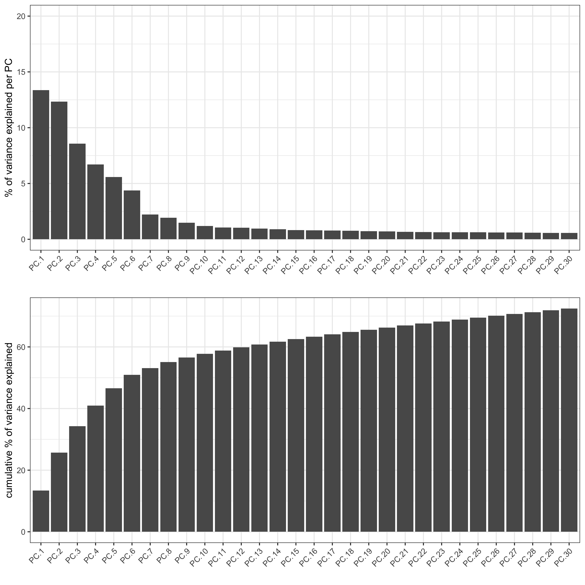

Warning: This tutorial was written with Giotto version 2.0.0.9046.This is an older version and results could be slightly different
# Ensure Giotto Suite is installed.
if(!"Giotto" %in% installed.packages()) {
devtools::install_github("drieslab/Giotto@suite")
}
# Ensure GiottoData, a small, helper module for tutorials, is installed.
if(!"GiottoData" %in% installed.packages()) {
devtools::install_github("drieslab/GiottoData")
}
# Ensure the Python environment for Giotto has been installed.
library(Giotto)
genv_exists = checkGiottoEnvironment()
if(!genv_exists){
# The following command need only be run once to install the Giotto environment.
installGiottoEnvironment()
}
library(GiottoData)
# 1. set working directory
results_folder = '/path/to/directory/'
# Optional: Specify a path to a Python executable within a conda or miniconda
# environment. If set to NULL (default), the Python executable within the previously
# installed Giotto environment will be used.
python_path = NULL # alternatively, "/local/python/path/python" if desired.Dataset explanation
10X genomics recently launched a new platform to obtain spatial expression data using a Visium Spatial Gene Expression slide.
The Visium kidney data to run this tutorial can be found here
Visium technology:

High resolution png from original tissue:
1. Giotto global instructions and preparations
## create instructions
instrs = createGiottoInstructions(save_dir = results_folder,
save_plot = TRUE,
show_plot = FALSE,
python_path = python_path)
## provide path to visium folder
data_path = '/path/to/Kidney_data/'2. Create Giotto object & process data
## directly from visium folder
visium_kidney = createGiottoVisiumObject(visium_dir = data_path,
expr_data = 'raw',
png_name = 'tissue_lowres_image.png',
gene_column_index = 2,
instructions = instrs)
## check metadata
pDataDT(visium_kidney)
# check available image names
showGiottoImageNames(visium_kidney) # "image" is the default name
## show aligned image
spatPlot(gobject = visium_kidney, cell_color = 'in_tissue', show_image = T, point_alpha = 0.7)
## subset on spots that were covered by tissue
metadata = pDataDT(visium_kidney)
in_tissue_barcodes = metadata[in_tissue == 1]$cell_ID
visium_kidney = subsetGiotto(visium_kidney, cell_ids = in_tissue_barcodes)
## filter
visium_kidney <- filterGiotto(gobject = visium_kidney,
expression_threshold = 1,
feat_det_in_min_cells = 50,
min_det_feats_per_cell = 1000,
expression_values = c('raw'),
verbose = T)
## normalize
visium_kidney <- normalizeGiotto(gobject = visium_kidney, scalefactor = 6000, verbose = T)
## add gene & cell statistics
visium_kidney <- addStatistics(gobject = visium_kidney)
## visualize
spatPlot2D(gobject = visium_kidney, show_image = T, point_alpha = 0.7)
spatPlot2D(gobject = visium_kidney, show_image = T, point_alpha = 0.7,
cell_color = 'nr_feats', color_as_factor = F)3. Dimension reduction
## highly variable features (genes)
visium_kidney <- calculateHVF(gobject = visium_kidney)
## run PCA on expression values (default)
visium_kidney <- runPCA(gobject = visium_kidney)
screePlot(visium_kidney, ncp = 30)
plotPCA(gobject = visium_kidney)
4. Clustering
## sNN network (default)
visium_kidney <- createNearestNetwork(gobject = visium_kidney, dimensions_to_use = 1:10, k = 15)
## Leiden clustering
visium_kidney <- doLeidenCluster(gobject = visium_kidney, resolution = 0.4, n_iterations = 1000)
plotUMAP(gobject = visium_kidney, cell_color = 'leiden_clus', show_NN_network = T, point_size = 2.5)5. Co-visualize
# expression and spatial
spatDimPlot(gobject = visium_kidney, cell_color = 'leiden_clus',
dim_point_size = 2, spat_point_size = 2.5)
spatDimPlot(gobject = visium_kidney, cell_color = 'nr_feats', color_as_factor = F,
dim_point_size = 2, spat_point_size = 2.5)6. Cell type marker gene detection
gini
gini_markers_subclusters = findMarkers_one_vs_all(gobject = visium_kidney,
method = 'gini',
expression_values = 'normalized',
cluster_column = 'leiden_clus',
min_featss = 20,
min_expr_gini_score = 0.5,
min_det_gini_score = 0.5)
topgenes_gini = gini_markers_subclusters[, head(.SD, 2), by = 'cluster']$feats
# violinplot
violinPlot(visium_kidney, feats = unique(topgenes_gini), cluster_column = 'leiden_clus',
strip_text = 8, strip_position = 'right')
violinPlot(visium_kidney, feats = unique(topgenes_gini), cluster_column = 'leiden_clus',
strip_text = 8, strip_position = 'right',
save_param = c(save_name = '11-z1-violinplot_gini', base_width = 5, base_height = 10))
# cluster heatmap
plotMetaDataHeatmap(visium_kidney,
selected_feats = topgenes_gini,
metadata_cols = c('leiden_clus'),
x_text_size = 10, y_text_size = 10)
# umap plots
dimFeatPlot2D(visium_kidney,
expression_values = 'scaled',
feats = gini_markers_subclusters[, head(.SD, 1), by = 'cluster']$feats,
cow_n_col = 3, point_size = 1)scran
scran_markers_subclusters = findMarkers_one_vs_all(gobject = visium_kidney,
method = 'scran',
expression_values = 'normalized',
cluster_column = 'leiden_clus')
topgenes_scran = scran_markers_subclusters[, head(.SD, 2), by = 'cluster']$feats
violinPlot(visium_kidney, feats = unique(topgenes_scran),
cluster_column = 'leiden_clus',
strip_text = 10, strip_position = 'right')
# cluster heatmap
plotMetaDataHeatmap(visium_kidney, selected_feats = topgenes_scran,
metadata_cols = c('leiden_clus'))
# umap plots
dimFeatPlot2D(visium_kidney, expression_values = 'scaled',
feats = scran_markers_subclusters[, head(.SD, 1), by = 'cluster']$feats,
cow_n_col = 3, point_size = 1)7. cell-type annotation
Visium spatial transcriptomics does not provide single-cell resolution, making cell type annotation a harder problem. Giotto provides 3 ways to calculate enrichment of specific cell-type signature gene list:
- PAGE
- rank
- hypergeometric test
8. Spatial grid
visium_kidney <- createSpatialGrid(gobject = visium_kidney,
sdimx_stepsize = 400,
sdimy_stepsize = 400,
minimum_padding = 0)
spatPlot(visium_kidney, cell_color = 'leiden_clus', show_grid = T,
grid_color = 'red', spatial_grid_name = 'spatial_grid')9. spatial network
## delaunay network: stats + creation
plotStatDelaunayNetwork(gobject = visium_kidney, maximum_distance = 400)
visium_kidney = createSpatialNetwork(gobject = visium_kidney, minimum_k = 0)
showNetworks(visium_kidney)
spatPlot(gobject = visium_kidney, show_network = T,
network_color = 'blue', spatial_network_name = 'Delaunay_network')10. Spatial genes
Spatial genes
## kmeans binarization
kmtest = binSpect(visium_kidney)
spatFeatPlot2D(visium_kidney, expression_values = 'scaled',
feats = kmtest$feats[1:6], cow_n_col = 2, point_size = 1.5)
## rank binarization
ranktest = binSpect(visium_kidney, bin_method = 'rank')
spatFeatPlot2D(visium_kidney, expression_values = 'scaled',
feats = ranktest$feats[1:6], cow_n_col = 2, point_size = 1.5)
Spatial co-expression patterns
## spatially correlated genes ##
ext_spatial_genes = kmtest[1:500]$feats
# 1. calculate gene spatial correlation and single-cell correlation
# create spatial correlation object
spat_cor_netw_DT = detectSpatialCorFeats(visium_kidney,
method = 'network',
spatial_network_name = 'Delaunay_network',
subset_feats = ext_spatial_genes)
# 2. identify most similar spatially correlated genes for one gene
Napsa_top10_genes = showSpatialCorFeats(spat_cor_netw_DT, feats = 'Napsa', show_top_feats = 10)
spatFeatPlot2D(visium_kidney, expression_values = 'scaled',
feats = c('Napsa', 'Kap', 'Defb29', 'Prdx1'), point_size = 3)
# 3. cluster correlated genes & visualize
spat_cor_netw_DT = clusterSpatialCorFeats(spat_cor_netw_DT,
name = 'spat_netw_clus', k = 8)
heatmSpatialCorFeats(visium_kidney,
spatCorObject = spat_cor_netw_DT,
use_clus_name = 'spat_netw_clus',
save_param = c(save_name = '22-z1-heatmap_correlated_genes',
save_format = 'pdf',
base_height = 6,
base_width = 8, units = 'cm'),
heatmap_legend_param = list(title = NULL))
# 4. rank spatial correlated clusters and show genes for selected clusters
netw_ranks = rankSpatialCorGroups(visium_kidney,
spatCorObject = spat_cor_netw_DT,
use_clus_name = 'spat_netw_clus',
save_param = c(save_name = '22-z2-rank_correlated_groups',
base_height = 3,
base_width = 5))
top_netw_spat_cluster = showSpatialCorFeats(spat_cor_netw_DT,
use_clus_name = 'spat_netw_clus',
selected_clusters = 6,
show_top_feats = 1)
# 5. create metagene enrichment score for clusters
cluster_genes_DT = showSpatialCorFeats(spat_cor_netw_DT,
use_clus_name = 'spat_netw_clus',
show_top_feats = 1)
cluster_genes = cluster_genes_DT$clus
names(cluster_genes) = cluster_genes_DT$feat_ID
visium_kidney = createMetafeats(visium_kidney,
feat_clusters = cluster_genes,
name = 'cluster_metagene')
showGiottoSpatEnrichments(visium_kidney)
spatCellPlot(visium_kidney,
spat_enr_names = 'cluster_metagene',
cell_annotation_values = netw_ranks$clusters,
point_size = 1.5, cow_n_col = 4)11. HMRF domains
# HMRF requires a fully connected network!
visium_kidney = createSpatialNetwork(gobject = visium_kidney,
minimum_k = 2,
name = 'Delaunay_full')
# spatial genes
my_spatial_genes <- kmtest[1:100]$feats
# do HMRF with different betas
hmrf_folder = paste0(results_folder,'/','HMRF_results/')
if(!file.exists(hmrf_folder)) dir.create(hmrf_folder, recursive = T)
# if Rscript is not found, you might have to create a symbolic link, e.g.
# cd /usr/local/bin
# sudo ln -s /Library/Frameworks/R.framework/Resources/Rscript Rscript
HMRF_spatial_genes = doHMRF(gobject = visium_kidney,
expression_values = 'scaled',
spatial_network_name = 'Delaunay_full',
spatial_genes = my_spatial_genes,
k = 5,
betas = c(0, 1, 6),
output_folder = paste0(hmrf_folder, '/', 'Spatial_genes/SG_topgenes_k5_scaled'))
## alternative way to view HMRF results
#results = writeHMRFresults(gobject = ST_test,
# HMRFoutput = HMRF_spatial_genes,
# k = 5, betas_to_view = seq(0, 25, by = 5))
#ST_test = addCellMetadata(ST_test, new_metadata = results, by_column = T, column_cell_ID = 'cell_ID')
## add HMRF of interest to giotto object
visium_kidney = addHMRF(gobject = visium_kidney,
HMRFoutput = HMRF_spatial_genes,
k = 5, betas_to_add = c(0, 2),
hmrf_name = 'HMRF')
## visualize
spatPlot(gobject = visium_kidney,
cell_color = 'HMRF_k5_b.0',
point_size = 5)
spatPlot(gobject = visium_kidney,
cell_color = 'HMRF_k5_b.2',
point_size = 5)Export and create Giotto Viewers
# check which annotations are available
combineMetadata(visium_kidney)
# select annotations, reductions and expression values to view in Giotto Viewer
viewer_folder = paste0(results_folder, '/', 'mouse_visium_kidney_viewer')
exportGiottoViewer(gobject = visium_kidney,
output_directory = viewer_folder,
factor_annotations = c('in_tissue',
'leiden_clus'),
numeric_annotations = c('nr_feats'),
dim_reductions = c('tsne', 'umap'),
dim_reduction_names = c('tsne', 'umap'),
expression_values = 'scaled',
expression_rounding = 2,
overwrite_dir = T)